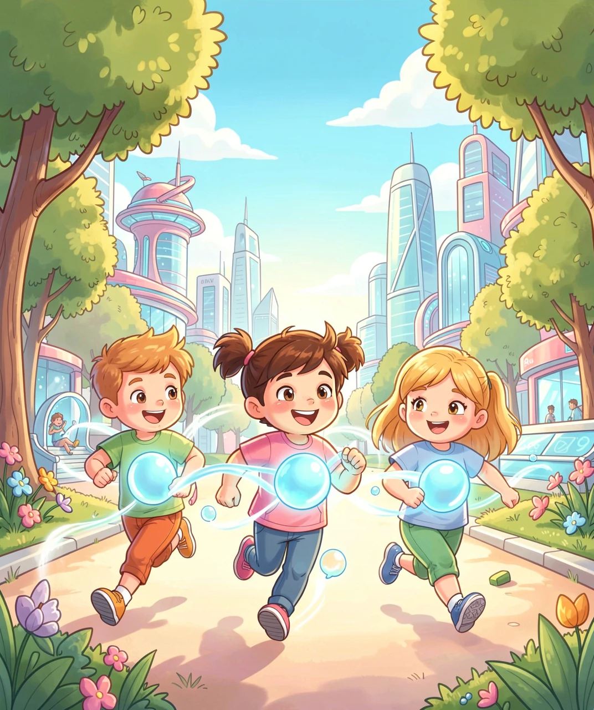
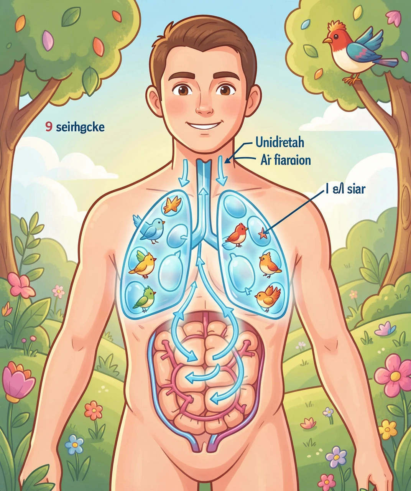
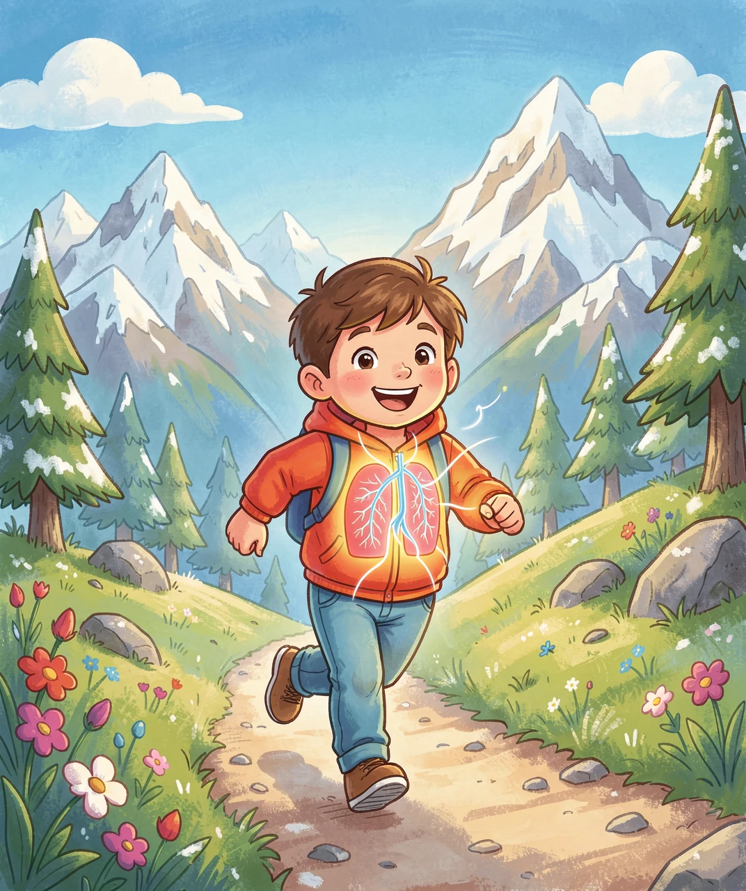

一个奇妙的身体改造脑洞

你有没有想过，为什么鸟能在高空缺氧的环境中飞行几个小时甚至几天都不累？秘密就藏在它们身体里——鸟类体内有一套人类完全没有的超级呼吸系统，叫做气囊（air sac）！
气囊是鸟类体内一些薄薄的、像气球一样的囊状结构，分布在身体各处：从脖子到胸口，再到肚子里面，甚至延伸到翅膀骨头里面！但气囊本身不进行气体交换——它们是空气的"运输管道"和"储存仓库"，让空气在鸟的体内单向流动，永远有新鲜氧气供应。
那如果人类也有这样一套气囊呢？想象一下：你的身体里多了一组"超级风箱"，每一次呼吸都能吸入比现在多好几倍的氧气——你可以跑得更快、爬得更高、几乎不会气喘吁吁！

人类的呼吸方式是"进出式"的——吸气时空气进入肺里，呼气时空气原路退出。这就像一个死胡同，效率很低：总有一部分"旧空气"留在肺里出不来。
但鸟类的气囊系统让呼吸变成了单向流动！空气进入鸟的身体后，不会原路返回，而是像河流一样流过一系列管道：
1. 第一次吸气：新鲜空气进入后胸气囊（不是直接进肺）。
2. 第一次呼气：空气从后胸气囊流进肺，在肺里完成氧气交换。
3. 第二次吸气：经过肺的空气流入前胸气囊。
4. 第二次呼气：空气从前胸气囊排出体外。
也就是说，鸟类吸气和呼气时，肺里都有新鲜空气在流动！这叫做"双重呼吸"。如果人类有了气囊，你跑步时就再也不会大喘气了——因为你的氧气供应量是别人的 2-3 倍！

如果全人类都长出了气囊系统，整个世界的运动方式都会彻底改变！让我们来想象一下：
🏃 体育课革命：1000 米长跑？小菜一碟！有了气囊，你的氧气利用率翻倍，跑完全程脸不红心不跳。体育老师不得不重新设计课程标准——也许 5000 米才是新的及格线！
🏔️ 高原无障碍：去西藏旅游再也不用担心高原反应了！拉萨海拔 3650 米？没问题。珠峰大本营 5200 米？轻松！人类的气囊让身体在任何高度都能获得充足氧气。
🏊 潜水新纪录：虽然气囊不能直接让你在水下呼吸，但更高效的氧气利用意味着——你一口气能潜水更久！普通人憋气 1-2 分钟，有气囊的人类可能轻松达到 4-5 分钟。
🎤 歌唱家遍地：歌手最怕的就是气息不够、高音上不去。有了气囊，你的肺活量是普通人的 2-3 倍。一唱到底不停换气，高音飙到天际！每个人都是歌唱家。
等等，别急着高兴！拥有气囊也会带来不少麻烦：
😕 胸口变宽：气囊需要空间。鸟类的身体之所以是流线型的，就是因为体内塞满了气囊。如果人类有气囊，你的胸腔会比现在宽一圈，穿衣服可能要重新选尺码。
😕 打嗝更响：气囊里的空气在排出时会产生共鸣。如果你在安静教室里打了个嗝——那声音可能像鸽子叫一样洪亮回荡……"咕——！" 😂
😕 骨头变脆：很多鸟类的气囊延伸到骨头内部（叫做"含气骨"），让骨头变轻但更脆。如果人类也一样，骨折的风险会大大增加——踢足球要特别小心！
😕 体温散热问题：气囊参与鸟类体温调节。人类的体温是 37°C，如果气囊系统让散热效率改变，在冬天你可能比别人更怕冷——因为体内的空气流动带走了更多热量。
😕 医疗复杂度大增：肺部手术变得极其复杂——医生不再只面对肺，还要处理 9 个气囊。胸部的 CT 图像变得密密麻麻，全是气囊影子。
如果人类真的获得了气囊系统，长远来看，这会改变整个文明：
🏃♂️ 运动革命：马拉松世界纪录可能被刷新到 1 小时 30 分以内。珠穆朗玛峰登山变成大众旅游项目。自由潜水深度纪录可能突破 200 米。
🚀 太空探索：气囊系统让身体更高效地利用氧气。宇航员在太空行走时，氧气瓶可以用更久。火星探索任务中，宇航员可以在低氧环境中活动更长时间。
🏭 高原开发：青藏高原、安第斯山脉——这些高海拔地区将变得完全宜居。城市可以建在 5000 米以上的高山顶上，再也不用担心缺氧。
🧬 进化思考：气囊系统在鸟类身上进化了上亿年。如果人类也要获得这个能力，也许基因工程是唯一的捷径。但我们的肺已经很好地满足了"一日三餐、偶尔运动"的需求——气囊虽酷，但不是必需品。
所以，下次你看到鸟儿在天空中自由飞翔时，记得——它们不只是有翅膀，体内还藏着一套超级呼吸系统。也许在某个平行宇宙里，人类也有气囊，正在珠峰顶上开运动会呢！🕊️✨